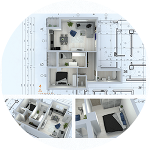
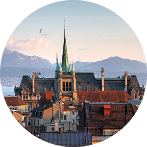
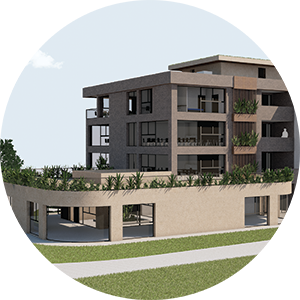
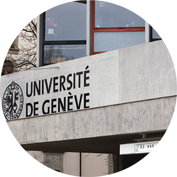

Études à la faculté d'architecture de l'université Cyril et Methodius à Skopje, Macédoine, et obtention d'un Master en architecture.

2015-2017
Emploi en tant qu'architecte dans l'entreprise générale Zikol à Strumica, Macédoine.

2018
Déménagement à Lausanne, Suisse.

2019-2022
Emploi en tant que dessinatrice chez Protec Études et Réalisations sàrl à Echallens, Suisse.

2019-2021
Études à l'Université de Genève, Suisse et obtention d'une Maîtrise Universitaire d'études avancées en conservation du patrimoine et muséologie, reconnue par de nombreuses ONG, dont l'UNESCO.
CV
Vous trouverez ci-joint mon CV. N'hésitez pas à le consulter et à me contacter pour tout complément d'information dont vous pourriez avoir besoin.
Diplôme et certificat de notes
Vous trouverez ci-joint mon diplôme ainsi que le certificat de notes.
N'hésitez pas à le consulter et à me contacter pour tout complément d'information dont vous pourriez avoir besoin.
Une brève introduction et l'histoire de la Faculté d'architecture à Skopje, Macédoine
La Faculté d'architecture à Skopje est l'une des 24 facultés de l'université Ss. Cyril et Methodius de Skopje, la plus grande de toutes les universités d'État de la République de Macédoine.
Au cours de ses 65 ans d'existence, la Faculté a connu plusieurs étapes importantes de son développement. Les premières études d'architecture ont été établies en 1949 au sein de la faculté technique nouvellement créée avec deux départements : architecture et génie civil. Par la suite, en 1955, au sein de la faculté technique, une nouvelle faculté d'architecture et de génie civil a été créée, comprenant deux départements : l'architecture et le génie civil. En 1976, le département d'architecture est devenu une faculté d'architecture indépendante offrant un programme unique et soigneusement conçu sur neuf, c'est-à-dire dix semestres.
Depuis le début de l'année universitaire 2007/2008, la faculté d'architecture utilise un nouveau programme d'études de cinq ans (études de premier et de deuxième cycle) selon le système européen de transfert de crédits (ECTS). Le programme d'études prévoit l'obtention d'un diplôme de baccalauréat après la troisième année d'études, par le biais d'un examen final intermédiaire, qui permet d'obtenir un diplôme avec le grade professionnel de Bachelor en architecture. À la fin du dixième semestre, après la soutenance du mémoire de master, le programme d'études délivre un diplôme de Master en architecture. Conformément à la loi sur la construction, ce type de diplôme mène directement à la profession d'architecte, c'est-à-dire qu'il fournit à son titulaire une autorisation de la Commission des architectes et autres ingénieurs de la construction.
Au cours de ses 65 années d'existence, la Faculté d'architecture de Skopje a atteint un niveau d'éducation élevé, une tradition respectable et une réputation d'établissement d'enseignement supérieur en architecture de premier ordre. Les étudiants reçoivent un enseignement théorique et pratique de qualité exceptionnelle dans le domaine de la conception architecturale, de l'histoire et de la théorie de l'architecture et de l'art, de l'urbanisme, de la planification urbaine et de la conception, des structures architecturales, des technologies de construction modernes et de la gestion du processus de conception et de construction. Cela permet aux étudiants d'acquérir des compétences professionnelles élevées, conformément aux normes européennes les plus élevées.
Thèse de Master
Projet de thèse de Master - Reprogrammation architecturale d'objets, de lieux et d'espaces.
Mentor: Prof. Jovan Ivanovski
Période: 01.2015 - 09.2015
Le thème principal de ce mémoire de Master est le travail avec le patrimoine architectural moderniste, plus précisément les œuvres d'échelle urbanistique. Il y a eu une multitude de recherches dans le domaine du patrimoine architectural, mais la plupart d'elles ont été limitées aux paramètres des bâtiments eux-mêmes.
C'est pourquoi, dans ce projet, nous allons nous concentrer sur différents outils de planification pour restaurer et réhabiliter non pas les bâtiments eux-mêmes mais le concept urbanistique du complexe, et l'adapter aux besoins sociaux actuels. Nous allons sortir du paramètre des bâtiments et remplacer leurs frontières physiques par des flux d'activité.
Est-il possible d'injecter une nouvelle couche du XXIème siècle entre ces bâtiments du XXème siècle, de manière à ce qu'ils puissent travailler ensemble pour créer un environnement urbain continu ?
Quel serait le type d'architecture qui serait la "colle" qui fusionne avec succès les parties fragmentées du complexe ?
En étudiant la condition actuelle de l'emplacement, nous pouvons voir un conglomérat, un mélange de fonctions discontinues, un assemblage de fragments lâchement attachés qui ne suit pas l'atmosphère dynamique d'une ville.
L'intervention : Recomposition et reprogrammation de l'espace intermédiaire - terminer le puzzle.
2 bâtiments annexes;
4 pavillons;
L'incorporation de ces six interventions architecturales devrait contribuer à la diversification des activités, des programmes et de la structure sociale des visiteurs du site.
Cette intervention ne s'applique pas aux caractéristiques morphologiques des structures ni à la forme de l'objet lui-même - le but n'est pas le chevauchement de style et la fusion morphologique dans le concept existant, mais le chevauchement des activités et leur coexistence.
Maîtrise d'études avancées en conservation du patrimoine et muséologie
Vous trouverez ci-joint mon diplôme de MAS et le certificat de notes, ainsi que mon mémoire sur l'histoire et la rénovation d'un îlot urbain du début du XXème siècle situé à Lausanne, Suisse.
Le MAS est un programme d'études avancées des universités de Genève, Lausanne et Fribourg. Cette formation allie théorie (enseignement) et pratique (travail sur le terrain et stage). Elle implique des partenariats nationaux (musées et offices cantonaux de la conservation du patrimoine) et internationaux (UNESCO, ICOMOS, DOCOMOMO, IRPA, Fondation Le Corbusier, etc.).
PROGRAMME
Théorie
Module 1: Patrimoine et inventaires;
Module 2: L'œuvre d'art en public;
Module 3: Eléments fondamentaux du droit de l'art;
Option A | Patrimoine
Module 1: Histoire de la conservation et de la restauration des monuments historiques en Europe XVIème - XXème siècles;
Module 2: Méthodes et outils en matière de conservation du patrimoine;
Module 3: Approches des pratiques de la conservation monumentale;
Pratique
Stage (440h)
Mémoire de stage
Projets professionnels
Ici vous trouverez une collection de travaux que j'ai réalisée pendant mon parcours professionnel en Suisse chez Protec Etudes et Réalisations Sàrl à Echallens.
L'ensemble consiste d'exemples des différentes phases de projet, tels que avant-projet, enquête, exécution et détails.
Ce ne sont que quelques-uns des nombreux projets auxquels j'ai été une collaboratrice directe.
Si vous êtes davantage intéressés, vous pouvez consulter également la collection de travaux que j'ai réalisée pendant que je travaillais à l'entreprise Zikol à Strumica, en Macédoine.
Vous trouverez une explication plus détaillée des œuvres dans le portfolio lui-même.
Projets académiques
Vous trouverez ci-joint mon portfolio de projets universitaires sélectionnés.
Cela comprend :
Un groupe de maisons;
Un musée;
Un centre de recherche;
Une revitalisation d'un hammam;
La faculté d'architecture de Skopje est une faculté dont l'objectif principal est de préparer les étudiants à la tâche difficile qui consiste à élaborer un concept architectural en tenant compte des limites naturelles du site, de l'orientation, des restrictions légales ainsi que des besoins et des souhaits du client.
Dans le programme de 5 ans, les étudiants passent par des studios de conception dans lesquels ils développent des projets dans les domaines suivants :
les bâtiments résidentiels;
les bâtiments administratifs;
les bâtiments d'enseignement;
les bâtiments de transport (aéroports, gares, etc.);
les bâtiments historiques;
etc.
Les travaux pratiques ont été soutenus par des cours théoriques tels que :
l'histoire de l'art et de l'architecture;
la théorie de l'architecture (la sémantique de l'architecture);
la construction des bâtiments, la statique et les matériaux;
les détails de construction;
etc.
Visualisation 3D
Vous trouverez ci-joint une collection d'images 3D que j'ai conçues au cours de mon travail.
Les objectifs des visualisations étaient nombreux:
Vente et marketing;
Aider le dialogue avec les différents clients;
Présentations de projets;
Développement d'idées;
Elles ont été réalisées à l'aide de différents logiciels dont :
Graphisoft Archicad;
AutoCAD 3Ds Max;
Adobe Photoshop;
Adobe Illustrator;
Design graphique
Une collection de projets de conception graphique pour des clients privés, lorsque je travaillais activement en tant que graphiste indépendante.
Travailler en tant que graphiste m'a beaucoup aidé à développer les compétences suivantes :
présentation d'idées et communication avec le client;
utilisation créative du langage, des symboles et des signes - sémantique appliquée;
l'importance de la couleur et des palettes de couleurs;
implémentation de stratégies de branding et marketing;
Les logiciels que j'ai utilisés lors de la conception étaient les suivants: